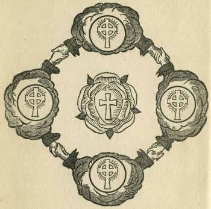

Sacred Texts Sub Rosa
Buy this Book at Amazon.com
|  | The Secret Doctrine of the Rosicruciansby Magus Incognito[1918] |
This is one of the numerous Yogi Publication Society (YPS) books which have been attributed to William Walker Atkinson under pseudonym. It bears strong similarities to The Kybalion, which is also known to have been authored by Atkinson. The material was later re-worked as one of the volumes in his series The Arcane Teachings.
This etext was scanned from an original 1918 printing of this work. The pagination and emphasis differ slightly from modern YPS printings of this book.